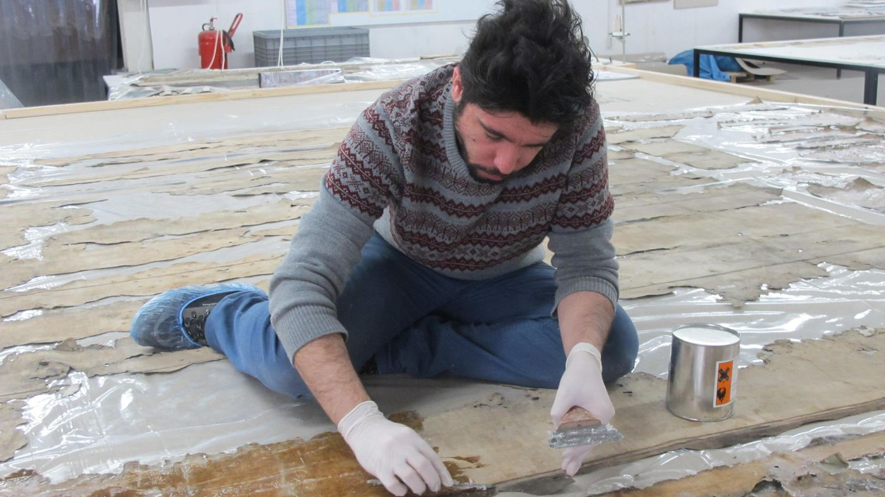
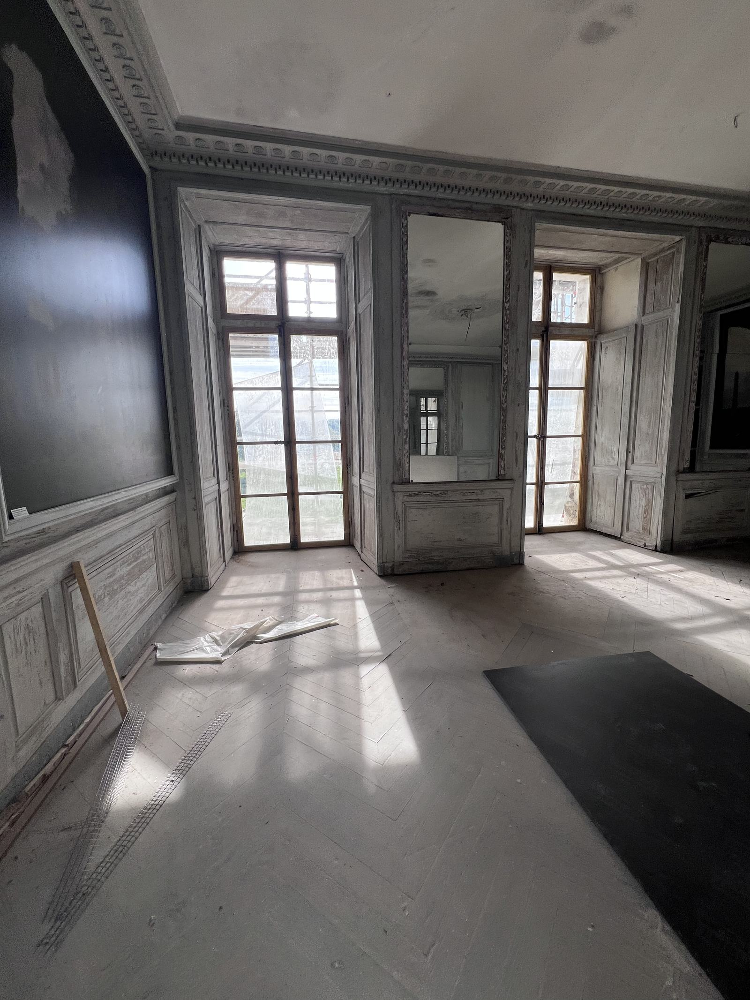
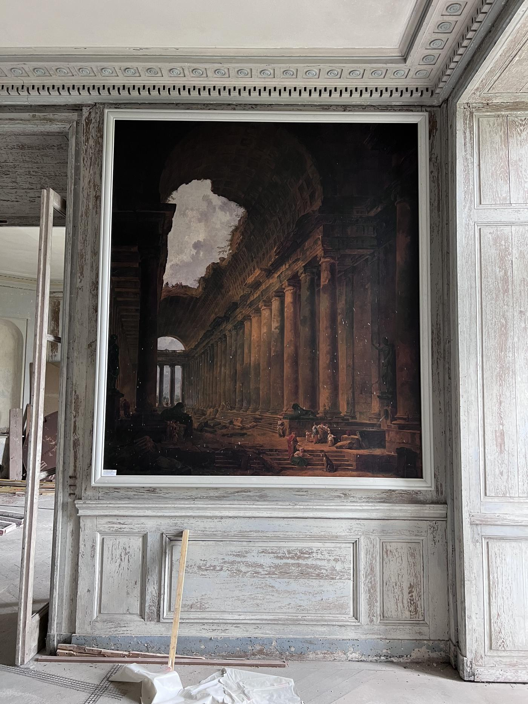

I
Château — Île-de-France
2024 — 2025 · Tour-horloge
Ornements de façade · stuc · modelage
Ornements de façade · stuc · modelage


Une sélection de chantiers menés sur le patrimoine — du château classé aux palaces de la Côte d'Azur, de l'ornement modelé au plafond doré. Au fil des images, la matière, la main et le geste qui se répète.






